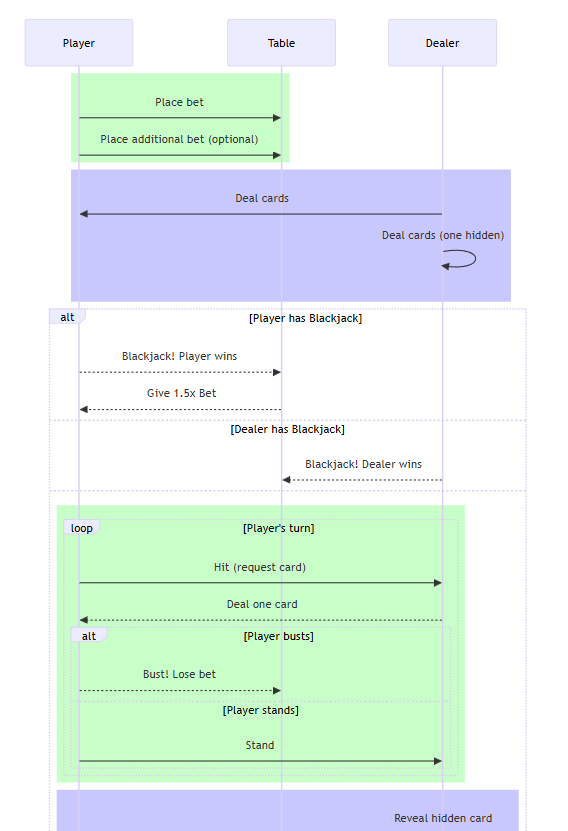

University of Bologna
Department of Computer Science
Report Itelligent System Project BDI 21 player
agent
Matteo Santoro
Supervisor: Andrea Omicini
Supervisor: Giavanni Ciatto
2025-02-16
Smart 21 aims to develop an intelligent system composed of agents
that are capable of playing 21. The objective is to create different
agents with different levels of intelligence to exploit the famouse
game, cheating like counting the cards is not forbideen here but
encouraged. Table will be attended always by a single agent that plays
against a dealer and has a precise amount of funds to raise or to loose.
Deck will be the classical 52 cards in two colors so 104 cards and when
all the cards are used another deck will be used so the game could go
on.
Expectation are to find the ideal BDI to create an agent capable of
understand when is hand is gonna win so raise the bet and the
opposite.
Implement a multi-agent system that includes different levels of intelligence for a card-playing bot.
Define and implement autonomous behaviors for the bots, allowing them to make strategic decisions based on the context of the game.
Casual player
Make an HiLo strategic agent.
Create a group of strategic agents that suggest moves to the player.
Transpose agent decision on a GUI that shows a visual table and cards.
Measure the winning rate of the agents.
Smart 21 will be a full simulation of the real game. Users can decide to play 21 for fun or test the ability of the agents by letting them play and analyze their stategies.
Final delivery will be a gradle project that has different running options:
1. Pure 21 game.
2. Dumb agent that plays with BDI defined by common sense.
3. HiLo agent that expoilts HiLO algorithm to count cards and decide autonomously how much money bet on a hand.
4. Consensuos guided agent by different strategies.
To test the agents implementation will be measured the amount of money won and risked and compared this data in a grafical representation.
(To be written at the end) • Relevant architectural styles (the ones mentioned in Section 3) • Relevant interaction patterns (the ones mentioned in Section 3) • Relevant software frameworks (the ones mentioned in Sections 3 and 4)
Blackjack is a popular casino card game where players compete against the dealer to get a score as close as possible to 21 without exceeding it. It is a game of skill, strategy, and luck, widely played in both physical and online casinos.
The game is played with one or more decks of 52 cards.
Numbered cards (2-10) have their face value, face cards (J, Q, K) are worth 10, and the Ace can be worth 1 or 11, depending on what benefits the player.
Each player and the dealer receive two initial cards. The dealer reveals one of their cards.
The player can decide to:
Hit – draw another card.
Stand – keep the current hand.
Double Down – double the bet and receive only one more card.
Split – if holding a pair, the player can split them into two separate hands.
The goal is to have a score closer to 21 than the dealer without exceeding it.
If the score exceeds 21, the player loses immediately (bust).
If the dealer exceeds 21, all remaining players win.
The dealer must draw cards until reaching 16.
The dealer must stand on 17 or higher.
If the player beats the dealer, they win an amount equal to their bet.
If the player gets a natural Blackjack (Ace + 10 or face card), they win 1.5 times their bet.
If the player and dealer have the same score, the bet is returned (Push).
Blackjack is a game that combines luck and strategy, with optimal strategy charts to maximize winning chances. Would you like some tips on basic strategy?
//TODO inserire alcuni screen di gioco
Software must adhere to the rules of 21, so it must be capable of know who wins the hand and give the right amount of money to the winner.
Users must be capable of following the game flow so the agents need to implement a slowdown mechanism and maybe a clear log.
During each phase of the game the agent must know what to do from his understandings.
Bots should exhibit appropriate strategic behaviors based on their level and knowledge about the game.
This is a multi-purpose system, it can be used as a classical game to occupy time by a user or can be played by intelligent agent to instruct the user with some basic stategy of the game. MAS (Multi-agent-system) architecture is used here to coordinate the activities of the player agents and strategic agents. A good abstraction used is the one that compares the Environment typically used in MAS with the table game where agents, based on their intentions and belief react according to changes like:
Place the cards.
Stand.
Bet.
Raise the bet.
Every entity involved in the action can perfectly see the (virtual) table with cards and money on
The interaction between agents is controlled by TwentyOneEnvironment that encapsulates a gameTable object that contains most of the business logic of the game. This system includes also a user graphical interface for monitoring the developement of the game.
| Entity | Description |
|---|---|
| Player | The main participant who makes decisions based on game conditions. |
| Dealer | The entity responsible for managing the game, distributing cards, and enforcing rules. |
| Strategic Agent | An abstract entity that provides advice to the player and influences their decisions. |

The project follows the basic guidelines of the MAS architecture. The more complex case of study in which an agent player relies on strategist agents has been moved to a specifc package inside the asl directory. Noteworthy is the implementation of the TwentyOneEnvironment that is used for all the case studies, to support and divide the responsability a GameEnvironmentUtils has been made to mantain a cleaner code to handle the action and beliefs of the agents. Attention has been given to some functionalities that are needed only in certain scenarios. For example the strategist agents only have to know the cards of the player only at the end of the game to update their card count when in the other circumstances player updates his internal counter in real time when sees dealer cards or hits.
if("stand".equals(act)) {
this.appWindow.actionPerformed(GameCommand.STAND);
GameEnvUtils.checkBusted(this, agName, this.gamePanel.getDealer());
final List<Integer> cardSeenValues = new ArrayList<>();
// aggiunto le carte del dealer
cardSeenValues.addAll(this.gamePanel.getDealer().hand.stream().map(Card::getValue).collect(Collectors.toList()));
if(!"waysmarterplayer".equals(agName) && !"smartplayer".equals(agName)){
//aggiungo anche le carte del giocatore a fine mano
cardSeenValues.addAll(this.gamePanel.getPlayer().hand.stream().map(Card::getValue).collect(Collectors.toList()));
}
GameEnvUtils.sendToAgentHandToCount(this, agName, cardSeenValues);
return true;
}Anything potentially interesting / non-trivial and technologies adopted to match the design. This section is expected to be short in case some documentation (e.g. Javadoc or Swagger Spec) has been produced for the software artefacts. This this case, the produced documentation should be referenced here.
The approach to solve the goal of creating agents more and more capable of playing was to create each agent smarter than the one before.
First approach player only know the guidelines of the game and tries to stand below a fixed score and bet always the minium wage. The smart player is defined more or less by the routine of the game and doesn’t care about the cards appeared.
Agent capable or memorize each card appeared on the table, both his and dealer’s card contribute to alterate his perceptions and modify his behaviour on behalf of a simple strategy, the HiLo. Keeping a conservative attitude of staying around the 18 points in hand the HiLo agents tries to overcome the dealer and have a dynamic behaviour following this idea:
If the count is high
(card_count > 2), it means there are many high cards in
the deck, so we can choose to stand earlier.
If the count is low
(card_count < -2), the deck is full of low cards, so we
can take the risk of hitting even with a higher hand.
+hand_value(V) : ?card_count(C) & V < (18 - C) <-
!debug_print(["Valore mano: ", V, " | Card Count: ", C, " => Chiedo carta!"]);
!ask_card.A facade player is at the table in the meanwhile he has a way of comunicate with some other agents that are specialized in differente strategiests of counting cards, after each hand he comunicates both his and dealer’s hand to them so that they can update their inner count of cards and advice him what to do.
You have already mentioned the HiLo (High-Low) method, which is one of the most widely used systems. In this system, cards are assigned the following values:
Cards from 2 to 6 are worth +1
Cards from 7 to 9 are neutral (0)
Cards 10, J, Q, K, and A are worth -1
The count helps determine when there are more high cards (10, J, Q, K, A) in the deck, which favors the player, and when the deck is favorable to the dealer.
This is another counting system similar to HiLo but more complex. In this case, cards are assigned different values:
2-3-4-5-6 = +1
7-8 = 0
9 = -1
10-J-Q-K-A = -2
This system aims to improve counting accuracy but requires more attention and skill. It tends to be more precise than HiLo in certain scenarios but is more difficult to master.
The Omega II system is more complex and combines different card counting approaches. The cards are assigned the following values:
2-3 = +1
4-5-6 = +2
7 = +1
8 = 0
9 = -1
10-A = -2
This system provides greater accuracy compared to simpler systems such as HiLo and KO, but it can be more challenging to apply due to its complexity.
Each agent then comunicates his suggested Bet and Stopping score, once the player has all the informations he choses who trust and fllows his guidelines.
+suggest_bet(G) <-
?card_count(C);
.wait(400);
.print("Card count vale: ", C);
if (C > 2) { Bet = 100; Stop = 19 }
if (C < -1) { Bet = 10; Stop = 16 }
if (C >= -1 & C <= 2) { Bet = 25; Stop = 18 }
.print("Suggerisco di puntare: ", Bet, " e di fermarsi a: ", Stop);
.send(advicedPlayer, tell, suggested_bet(Bet, Stop)).The software has quite a simple deployment, a gradle application is used to build and run all the case studied. Running the following commands will allow to test rispectively
the "Smart" Agent.
the waySmarterPlayer counting cards.
the centralized strategic group of agents
Run tasks
---------
runsmartPlayerMAS - Esegue il MAS smartPlayer.mas2j
runStrategistMAS - Esegue il MAS Strategist.mas2j
runwaySmarterPlayerMAS - Esegue il MAS waySmarterPlayer.mas2jRecap what you did.